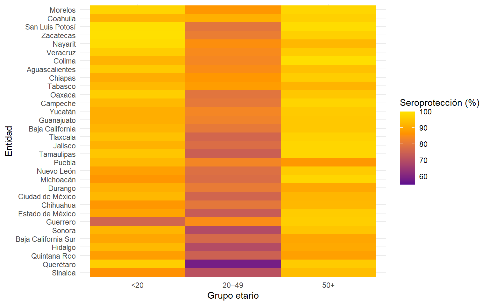

| Indicador | Prevalencia (%) | Error estándar | CV | IC95% LI | IC95% LS |
|---|---|---|---|---|---|
| Seroprevalencia nacional de sarampión | 86.81 | 0.55 | 0.63 | 85.69 | 87.86 |
Prevalencia nacional
Prevalencia por sexo
| Sexo | Prevalencia (%) | Error estándar | IC95% LI | IC95% LS | CV |
|---|---|---|---|---|---|
| Hombre | 87.09 | 0.01 | 85.38 | 88.81 | 0.01 |
| Mujer | 86.55 | 0.01 | 85.27 | 87.83 | 0.01 |
Prevalencia por grupos etarios
9 categorías de edad
| Seroprevalencia de sarampión por grupo etario | ||||||
| ENSANUT – estimaciones ponderadas | ||||||
| Grupo etario | n Negativo ponde | Seronegativo % (IC95%) | CV Negativo (%) | n Positivo ponde | Seropositivo % (IC95%) | CV Positivo (%) |
|---|---|---|---|---|---|---|
| 1 | 362,415 | 31.8% (17.4, 50.8) | 27.6 | 776,083 | 68.2% (49.2, 82.6) | 12.9 |
| 2-5 | 872,871 | 8.7% (6.3, 11.7) | 15.8 | 9,204,712 | 91.3% (88.3, 93.7) | 1.5 |
| 6-12 | 1,215,380 | 6.5% (5.0, 8.5) | 13.8 | 17,443,308 | 93.5% (91.5, 95.0) | 1.0 |
| 13-19 | 1,036,356 | 8.8% (5.9, 13.0) | 20.2 | 10,711,291 | 91.2% (87.0, 94.1) | 2.0 |
| 20-29 | 4,897,326 | 24.4% (21.0, 28.2) | 7.6 | 15,154,020 | 75.6% (71.8, 79.0) | 2.5 |
| 30-39 | 4,402,741 | 22.5% (19.3, 26.0) | 7.7 | 15,185,946 | 77.5% (74.0, 80.7) | 2.2 |
| 40-49 | 2,463,324 | 15.4% (12.7, 18.4) | 9.3 | 13,581,250 | 84.6% (81.6, 87.3) | 1.7 |
| 50-59 | 886,142 | 7.1% (5.4, 9.4) | 14.3 | 11,554,262 | 92.9% (90.6, 94.6) | 1.1 |
| 60+ | 611,691 | 3.5% (2.6, 4.9) | 16.4 | 16,638,713 | 96.5% (95.1, 97.4) | 0.6 |

3 categorías de edad
| Seroprevalencia de sarampión por grupo etario | ||||||
| ENSANUT – estimaciones ponderadas | ||||||
| Grupo etario | n Negativo ponde | Seronegativo % (IC95%) | CV Negativo (%) | n Positivo ponde | Seropositivo % (IC95%) | CV Positivo (%) |
|---|---|---|---|---|---|---|
| <20 | 3,874,485 | 8.8% (7.4, 10.5) | 8.7 | 40,000,697 | 91.2% (89.5, 92.6) | 0.8 |
| 20-49 | 11,375,927 | 21.3% (19.4, 23.3) | 4.7 | 42,055,913 | 78.7% (76.7, 80.6) | 1.3 |
| 50+ | 1,497,833 | 5.0% (4.1, 6.2) | 11.0 | 28,192,975 | 95.0% (93.8, 95.9) | 0.6 |

2 categorías de edad
| Seroprevalencia de sarampión por grupo etario | ||||||
| ENSANUT – estimaciones ponderadas | ||||||
| Grupo etario | n Negativo ponde | Seronegativo % (IC95%) | CV Negativo (%) | n Positivo ponde | Seropositivo % (IC95%) | CV Positivo (%) |
|---|---|---|---|---|---|---|
| <=20 | 3,874,485 | 8.8% (7.4, 10.5) | 8.7 | 40,000,697 | 91.2% (89.5, 92.6) | 0.8 |
| 21+ | 12,873,760 | 15.5% (14.2, 16.9) | 4.5 | 70,248,888 | 84.5% (83.1, 85.8) | 0.8 |

Prevalencia por región geográfica
8 regiones
| Seroprevalencia de sarampión por region | ||||||
| ENSANUT – estimaciones ponderadas | ||||||
| Región | n Negativo ponderado | Seronegativo % (IC95%) | CV Negativo (%) | n Positivo ponderado | Seropositivo % (IC95%) | CV Positivo (%) |
|---|---|---|---|---|---|---|
| CDMX / Estado de México | 4,249,006 | 15.6% (13.1, 18.6) | 8.9 | 22,930,693 | 84.4% (81.4, 86.9) | 1.6 |
| Centro | 1,371,297 | 11.6% (9.1, 14.6) | 12.1 | 10,470,814 | 88.4% (85.4, 90.9) | 1.6 |
| Centro Norte | 1,976,152 | 12.1% (10.0, 14.5) | 9.6 | 14,403,821 | 87.9% (85.5, 90.0) | 1.3 |
| Frontera | 2,009,491 | 12.5% (9.9, 15.7) | 11.8 | 14,093,728 | 87.5% (84.3, 90.1) | 1.7 |
| Pacífico Centro | 1,885,848 | 13.2% (10.3, 16.7) | 12.2 | 12,440,669 | 86.8% (83.3, 89.7) | 1.9 |
| Pacífico Norte | 1,776,062 | 15.2% (12.2, 18.8) | 11.0 | 9,915,151 | 84.8% (81.2, 87.8) | 2.0 |
| Pacífico Sur | 1,986,428 | 12.1% (9.1, 15.9) | 14.4 | 14,477,229 | 87.9% (84.1, 90.9) | 2.0 |
| Península | 1,493,961 | 11.5% (8.7, 15.0) | 13.9 | 11,517,481 | 88.5% (85.0, 91.3) | 1.8 |

9 regiones
| Seroprevalencia de sarampión por region | ||||||
| ENSANUT – estimaciones ponderadas | ||||||
| Región | n Negativo ponderado | Seronegativo % (IC95%) | CV Negativo (%) | n Positivo ponderado | Seropositivo % (IC95%) | CV Positivo (%) |
|---|---|---|---|---|---|---|
| CDMX | 1,407,628 | 14.9% (11.2, 19.4) | 13.9 | 8,058,261 | 85.1% (80.6, 88.8) | 2.4 |
| Centro | 1,371,297 | 11.6% (9.1, 14.6) | 12.1 | 10,470,814 | 88.4% (85.4, 90.9) | 1.6 |
| Centro Norte | 1,976,152 | 12.1% (10.0, 14.5) | 9.6 | 14,403,821 | 87.9% (85.5, 90.0) | 1.3 |
| Estado de México | 2,841,378 | 16.0% (12.8, 19.9) | 11.4 | 14,872,432 | 84.0% (80.1, 87.2) | 2.2 |
| Frontera | 2,009,491 | 12.5% (9.9, 15.7) | 11.8 | 14,093,728 | 87.5% (84.3, 90.1) | 1.7 |
| Pacífico Centro | 1,885,848 | 13.2% (10.3, 16.7) | 12.2 | 12,440,669 | 86.8% (83.3, 89.7) | 1.9 |
| Pacífico Norte | 1,776,062 | 15.2% (12.2, 18.8) | 11.0 | 9,915,151 | 84.8% (81.2, 87.8) | 2.0 |
| Pacífico Sur | 1,986,428 | 12.1% (9.1, 15.9) | 14.4 | 14,477,229 | 87.9% (84.1, 90.9) | 2.0 |
| Península | 1,493,961 | 11.5% (8.7, 15.0) | 13.9 | 11,517,481 | 88.5% (85.0, 91.3) | 1.8 |

Prevalencia estatal
| Seroprevalencia de sarampión por region | ||||||
| ENSANUT – estimaciones ponderadas | ||||||
| Entidad | n Negativo ponderado | Seronegativo % (IC95%) | CV Negativo (%) | n Positivo ponderado | Seropositivo % (IC95%) | CV Positivo (%) |
|---|---|---|---|---|---|---|
| Morelos | 149,303 | 6.8% (3.6, 12.6) | 32.1 | 2,040,894 | 93.2% (87.4, 96.4) | 2.4 |
| Coahuila | 236,294 | 7.2% (4.1, 12.3) | 28.0 | 3,053,210 | 92.8% (87.7, 95.9) | 2.2 |
| Nayarit | 99,665 | 7.9% (3.9, 15.2) | 34.7 | 1,167,986 | 92.1% (84.8, 96.1) | 3.0 |
| Zacatecas | 133,725 | 8.6% (5.5, 13.1) | 22.3 | 1,428,450 | 91.4% (86.9, 94.5) | 2.1 |
| Veracruz | 631,165 | 8.8% (6.4, 12.1) | 16.5 | 6,526,345 | 91.2% (87.9, 93.6) | 1.6 |
| San Luis Potosí | 266,750 | 8.9% (4.3, 17.4) | 35.9 | 2,735,441 | 91.1% (82.6, 95.7) | 3.5 |
| Aguascalientes | 130,514 | 9.2% (4.1, 19.4) | 40.1 | 1,289,470 | 90.8% (80.6, 95.9) | 4.1 |
| Tabasco | 249,085 | 9.3% (6.2, 13.6) | 20.1 | 2,433,615 | 90.7% (86.4, 93.8) | 2.1 |
| Chiapas | 488,040 | 9.9% (5.2, 17.8) | 31.5 | 4,459,257 | 90.1% (82.2, 94.8) | 3.4 |
| Colima | 79,932 | 10.4% (5.2, 19.7) | 34.5 | 691,015 | 89.6% (80.3, 94.8) | 4.0 |
| Oaxaca | 422,095 | 10.8% (5.8, 19.1) | 30.4 | 3,487,798 | 89.2% (80.9, 94.2) | 3.7 |
| Campeche | 113,719 | 11.3% (7.8, 16.1) | 18.4 | 890,044 | 88.7% (83.9, 92.2) | 2.4 |
| Yucatán | 261,992 | 11.3% (7.5, 16.7) | 20.4 | 2,056,825 | 88.7% (83.3, 92.5) | 2.6 |
| Guanajuato | 719,638 | 11.6% (8.6, 15.4) | 14.8 | 5,478,396 | 88.4% (84.6, 91.4) | 1.9 |
| Puebla | 864,250 | 12.3% (7.6, 19.3) | 23.6 | 6,150,737 | 87.7% (80.7, 92.4) | 3.3 |
| Jalisco | 1,068,576 | 12.7% (9.0, 17.5) | 17.1 | 7,365,282 | 87.3% (82.5, 91.0) | 2.5 |
| Durango | 250,369 | 13.1% (8.4, 19.9) | 22.1 | 1,653,784 | 86.9% (80.1, 91.6) | 3.3 |
| Tamaulipas | 478,396 | 13.2% (7.9, 21.3) | 25.4 | 3,145,629 | 86.8% (78.7, 92.1) | 3.9 |
| Tlaxcala | 170,205 | 13.5% (7.4, 23.5) | 29.8 | 1,087,952 | 86.5% (76.5, 92.6) | 4.7 |
| Baja California | 476,818 | 13.6% (8.5, 21.0) | 23.1 | 3,023,416 | 86.4% (79.0, 91.5) | 3.6 |
| Chihuahua | 552,837 | 14.0% (9.5, 20.2) | 19.2 | 3,382,856 | 86.0% (79.8, 90.5) | 3.1 |
| Nuevo León | 741,964 | 14.1% (9.1, 21.2) | 21.7 | 4,512,033 | 85.9% (78.8, 90.9) | 3.6 |
| Michoacán | 737,340 | 14.4% (10.0, 20.3) | 18.2 | 4,384,371 | 85.6% (79.7, 90.0) | 3.1 |
| Ciudad de México | 1,407,628 | 14.9% (11.2, 19.4) | 13.9 | 8,058,261 | 85.1% (80.6, 88.8) | 2.4 |
| Estado de México | 2,841,378 | 16.0% (12.8, 19.9) | 11.4 | 14,872,432 | 84.0% (80.1, 87.2) | 2.2 |
| Sonora | 498,544 | 16.4% (9.9, 25.9) | 24.7 | 2,544,453 | 83.6% (74.1, 90.1) | 4.8 |
| Guerrero | 550,780 | 16.4% (9.2, 27.7) | 28.4 | 2,797,801 | 83.6% (72.3, 90.8) | 5.6 |
| Hidalgo | 569,928 | 16.6% (11.1, 24.2) | 20.1 | 2,856,516 | 83.4% (75.8, 88.9) | 4.0 |
| Baja California Sur | 132,554 | 16.8% (11.2, 24.5) | 20.1 | 656,191 | 83.2% (75.5, 88.8) | 4.1 |
| Sinaloa | 568,480 | 18.4% (13.1, 25.3) | 16.9 | 2,523,105 | 81.6% (74.7, 86.9) | 3.8 |
| Quintana Roo | 381,126 | 18.5% (11.6, 28.2) | 22.8 | 1,677,739 | 81.5% (71.8, 88.4) | 5.2 |
| Querétaro | 475,156 | 20.7% (13.5, 30.4) | 20.9 | 1,818,279 | 79.3% (69.6, 86.5) | 5.4 |


Estatal en <20 años
| Seroprevalencia de sarampión en menores de 20 años | ||||||
| ENSANUT – estimaciones ponderadas | ||||||
| Entidad | n Negativo ponderado | Seronegativo % (IC95%) | CV Negativo (%) | n Positivo ponderado | Seropositivo % (IC95%) | CV Positivo (%) |
|---|---|---|---|---|---|---|
| Zacatecas | 492 | 0.1% (0.0, 0.7) | 100.3 | 520,750 | 99.9% (99.3, 100.0) | 0.1 |
| San Luis Potosí | 5,136 | 0.4% (0.0, 3.8) | 111.8 | 1,169,126 | 99.6% (96.2, 100.0) | 0.5 |
| Nayarit | 3,820 | 0.9% (0.2, 4.0) | 77.1 | 425,077 | 99.1% (96.0, 99.8) | 0.7 |
| Morelos | 15,045 | 2.3% (0.7, 7.4) | 61.0 | 643,155 | 97.7% (92.6, 99.3) | 1.4 |
| Oaxaca | 46,760 | 3.3% (1.1, 9.7) | 56.1 | 1,359,181 | 96.7% (90.3, 98.9) | 1.9 |
| Querétaro | 27,373 | 3.4% (1.1, 10.2) | 58.4 | 785,769 | 96.6% (89.8, 98.9) | 2.0 |
| Veracruz | 80,267 | 3.6% (1.5, 8.3) | 43.5 | 2,142,036 | 96.4% (91.7, 98.5) | 1.6 |
| Aguascalientes | 18,677 | 4.1% (1.4, 11.2) | 53.4 | 441,471 | 95.9% (88.8, 98.6) | 2.3 |
| Tamaulipas | 60,815 | 4.8% (1.3, 16.3) | 65.9 | 1,212,046 | 95.2% (83.7, 98.7) | 3.3 |
| Tlaxcala | 22,547 | 5.6% (2.4, 12.3) | 41.6 | 381,371 | 94.4% (87.7, 97.6) | 2.5 |
| Tabasco | 63,647 | 7.0% (4.0, 11.7) | 27.3 | 851,582 | 93.0% (88.3, 96.0) | 2.0 |
| Campeche | 20,991 | 7.0% (2.8, 16.3) | 45.2 | 279,949 | 93.0% (83.7, 97.2) | 3.4 |
| Hidalgo | 83,736 | 7.1% (2.1, 22.0) | 61.5 | 1,088,652 | 92.9% (78.0, 97.9) | 4.7 |
| Puebla | 182,442 | 7.2% (3.5, 14.3) | 36.1 | 2,349,874 | 92.8% (85.7, 96.5) | 2.8 |
| Ciudad de México | 166,485 | 7.2% (3.3, 15.0) | 38.7 | 2,148,860 | 92.8% (85.0, 96.7) | 3.0 |
| Sonora | 80,137 | 7.7% (3.7, 15.5) | 36.8 | 957,723 | 92.3% (84.5, 96.3) | 3.1 |
| Baja California | 75,585 | 7.7% (2.8, 19.4) | 49.8 | 907,681 | 92.3% (80.6, 97.2) | 4.1 |
| Coahuila | 89,031 | 7.8% (4.0, 14.9) | 33.9 | 1,049,683 | 92.2% (85.1, 96.0) | 2.9 |
| Colima | 18,924 | 7.9% (1.2, 36.5) | 89.6 | 221,865 | 92.1% (63.5, 98.8) | 7.6 |
| Jalisco | 221,815 | 8.2% (3.6, 17.5) | 40.3 | 2,472,589 | 91.8% (82.5, 96.4) | 3.6 |
| Durango | 59,864 | 8.8% (2.2, 29.6) | 68.3 | 620,108 | 91.2% (70.4, 97.8) | 6.6 |
| Yucatán | 64,910 | 8.9% (2.9, 24.4) | 55.4 | 663,576 | 91.1% (75.6, 97.1) | 5.4 |
| Guanajuato | 192,398 | 9.0% (4.6, 17.1) | 33.9 | 1,934,371 | 91.0% (82.9, 95.4) | 3.4 |
| Chiapas | 189,468 | 9.2% (4.0, 19.6) | 40.6 | 1,875,578 | 90.8% (80.4, 96.0) | 4.1 |
| Baja California Sur | 25,210 | 10.4% (3.2, 29.2) | 57.9 | 217,555 | 89.6% (70.8, 96.8) | 6.7 |
| Estado de México | 594,519 | 10.5% (6.2, 17.0) | 25.6 | 5,094,492 | 89.5% (83.0, 93.8) | 3.0 |
| Nuevo León | 176,287 | 11.3% (3.1, 33.7) | 62.4 | 1,381,901 | 88.7% (66.3, 96.9) | 8.0 |
| Quintana Roo | 77,788 | 11.6% (5.1, 24.2) | 40.1 | 595,429 | 88.4% (75.8, 94.9) | 5.2 |
| Chihuahua | 149,943 | 12.9% (6.3, 24.4) | 34.6 | 1,015,824 | 87.1% (75.6, 93.7) | 5.1 |
| Michoacán | 227,667 | 13.0% (7.0, 23.1) | 30.8 | 1,521,142 | 87.0% (76.9, 93.0) | 4.6 |
| Sinaloa | 131,614 | 13.9% (6.5, 27.1) | 36.7 | 816,662 | 86.1% (72.9, 93.5) | 5.9 |
| Guerrero | 313,628 | 24.1% (10.7, 45.5) | 37.6 | 990,317 | 75.9% (54.5, 89.3) | 11.9 |

Estatal en 20-49
| Seroprevalencia de sarampión en adultos 20 a 49 años | ||||||
| ENSANUT – estimaciones ponderadas | ||||||
| Entidad | n Negativo ponderado | Seronegativo % (IC95%) | CV Negativo (%) | n Positivo ponderado | Seropositivo % (IC95%) | CV Positivo (%) |
|---|---|---|---|---|---|---|
| Coahuila | 126,647 | 8.6% (3.6, 19.2) | 43.2 | 1,348,244 | 91.4% (80.8, 96.4) | 4.1 |
| Tabasco | 137,135 | 11.8% (6.5, 20.5) | 29.5 | 1,023,028 | 88.2% (79.5, 93.5) | 4.0 |
| Morelos | 123,719 | 12.8% (6.6, 23.6) | 32.8 | 839,781 | 87.2% (76.4, 93.4) | 4.8 |
| Chiapas | 272,018 | 12.8% (6.1, 24.8) | 36.2 | 1,860,322 | 87.2% (75.2, 93.9) | 5.3 |
| Nayarit | 70,034 | 14.4% (6.2, 29.8) | 40.5 | 417,243 | 85.6% (70.2, 93.8) | 6.8 |
| Aguascalientes | 92,598 | 14.9% (5.8, 33.3) | 45.2 | 527,266 | 85.1% (66.7, 94.2) | 7.9 |
| Guerrero | 216,732 | 15.0% (8.9, 24.1) | 25.4 | 1,228,289 | 85.0% (75.9, 91.1) | 4.5 |
| Veracruz | 484,313 | 15.5% (10.8, 21.8) | 18.0 | 2,638,894 | 84.5% (78.2, 89.2) | 3.3 |
| Colima | 60,027 | 16.1% (7.8, 30.3) | 34.9 | 312,583 | 83.9% (69.7, 92.2) | 6.7 |
| Yucatán | 175,770 | 16.4% (10.7, 24.5) | 21.3 | 893,114 | 83.6% (75.5, 89.3) | 4.2 |
| Puebla | 496,979 | 16.5% (8.6, 29.3) | 31.6 | 2,516,641 | 83.5% (70.7, 91.4) | 6.2 |
| Guanajuato | 468,490 | 17.2% (12.1, 24.0) | 17.6 | 2,252,970 | 82.8% (76.0, 87.9) | 3.7 |
| Zacatecas | 121,273 | 18.5% (12.0, 27.4) | 21.2 | 535,805 | 81.5% (72.6, 88.0) | 4.8 |
| Durango | 143,779 | 19.0% (12.4, 28.0) | 20.9 | 613,297 | 81.0% (72.0, 87.6) | 4.9 |
| Campeche | 86,539 | 19.5% (12.5, 29.2) | 21.7 | 356,669 | 80.5% (70.8, 87.5) | 5.3 |
| Baja California | 373,964 | 19.5% (12.0, 30.1) | 23.6 | 1,541,061 | 80.5% (69.9, 88.0) | 5.7 |
| Chihuahua | 317,001 | 19.9% (11.1, 33.2) | 28.2 | 1,272,342 | 80.1% (66.8, 88.9) | 7.0 |
| San Luis Potosí | 256,783 | 20.1% (9.9, 36.7) | 34.0 | 1,020,383 | 79.9% (63.3, 90.1) | 8.5 |
| Oaxaca | 335,662 | 20.5% (10.1, 37.2) | 33.6 | 1,300,559 | 79.5% (62.8, 89.9) | 8.7 |
| Nuevo León | 513,303 | 21.7% (13.7, 32.7) | 22.3 | 1,849,552 | 78.3% (67.3, 86.3) | 6.2 |
| Jalisco | 804,964 | 22.2% (16.0, 30.0) | 16.1 | 2,824,723 | 77.8% (70.0, 84.0) | 4.6 |
| Michoacán | 486,229 | 22.4% (14.7, 32.6) | 20.4 | 1,683,415 | 77.6% (67.4, 85.3) | 5.9 |
| Baja California Sur | 91,883 | 23.2% (16.3, 31.9) | 17.1 | 304,113 | 76.8% (68.1, 83.7) | 5.2 |
| Tlaxcala | 140,566 | 23.9% (12.4, 41.0) | 30.8 | 447,155 | 76.1% (59.0, 87.6) | 9.7 |
| Ciudad de México | 1,014,488 | 24.3% (17.4, 32.9) | 16.3 | 3,163,611 | 75.7% (67.1, 82.6) | 5.2 |
| Quintana Roo | 264,794 | 25.3% (13.4, 42.6) | 29.7 | 780,520 | 74.7% (57.4, 86.6) | 10.1 |
| Tamaulipas | 402,330 | 25.6% (15.2, 39.9) | 24.8 | 1,166,863 | 74.4% (60.1, 84.8) | 8.5 |
| Estado de México | 2,099,647 | 26.3% (20.6, 32.9) | 12.0 | 5,896,785 | 73.7% (67.1, 79.4) | 4.3 |
| Sinaloa | 384,352 | 29.0% (18.9, 41.8) | 20.4 | 939,953 | 71.0% (58.2, 81.1) | 8.4 |
| Hidalgo | 390,009 | 30.4% (17.8, 46.7) | 24.8 | 894,210 | 69.6% (53.3, 82.2) | 10.8 |
| Sonora | 380,901 | 30.6% (18.1, 46.7) | 24.3 | 864,177 | 69.4% (53.3, 81.9) | 10.7 |
| Querétaro | 430,463 | 41.5% (32.7, 50.8) | 11.3 | 607,650 | 58.5% (49.2, 67.3) | 8.0 |

Estatal en 50+
| Seroprevalencia de sarampión en adultos 50+ años | ||||||
| ENSANUT – estimaciones ponderadas | ||||||
| Entidad | n Negativo ponderado | Seronegativo % (IC95%) | CV Negativo (%) | n Positivo ponderado | Seropositivo % (IC95%) | CV Positivo (%) |
|---|---|---|---|---|---|---|
| Colima | 980 | 0.6% (0.1, 4.4) | 101.0 | 156,567 | 99.4% (95.6, 99.9) | 0.6 |
| San Luis Potosí | 4,831 | 0.9% (0.1, 6.8) | 106.5 | 545,932 | 99.1% (93.2, 99.9) | 0.9 |
| Morelos | 10,540 | 1.9% (0.6, 5.2) | 53.4 | 557,957 | 98.1% (94.8, 99.4) | 1.0 |
| Michoacán | 23,444 | 1.9% (0.6, 6.5) | 62.6 | 1,179,815 | 98.1% (93.5, 99.4) | 1.2 |
| Tamaulipas | 15,252 | 2.0% (0.6, 6.2) | 60.0 | 766,720 | 98.0% (93.8, 99.4) | 1.2 |
| Jalisco | 41,796 | 2.0% (0.4, 8.4) | 75.4 | 2,067,970 | 98.0% (91.6, 99.6) | 1.5 |
| Campeche | 6,189 | 2.4% (0.9, 6.3) | 50.7 | 253,426 | 97.6% (93.7, 99.1) | 1.2 |
| Tlaxcala | 7,091 | 2.7% (0.8, 8.2) | 58.4 | 259,426 | 97.3% (91.8, 99.2) | 1.6 |
| Coahuila | 20,616 | 3.1% (1.2, 7.8) | 48.6 | 655,283 | 96.9% (92.2, 98.8) | 1.5 |
| Zacatecas | 11,961 | 3.1% (0.5, 16.6) | 90.2 | 371,896 | 96.9% (83.4, 99.5) | 2.9 |
| Guerrero | 20,421 | 3.4% (1.1, 10.2) | 57.6 | 579,196 | 96.6% (89.8, 98.9) | 2.0 |
| Chiapas | 26,555 | 3.5% (1.2, 9.7) | 52.9 | 723,357 | 96.5% (90.3, 98.8) | 1.9 |
| Estado de México | 147,211 | 3.7% (1.8, 7.4) | 36.3 | 3,881,155 | 96.3% (92.6, 98.2) | 1.4 |
| Veracruz | 66,584 | 3.7% (1.5, 8.7) | 44.8 | 1,745,415 | 96.3% (91.3, 98.5) | 1.7 |
| Nuevo León | 52,373 | 3.9% (1.9, 8.1) | 37.9 | 1,280,580 | 96.1% (91.9, 98.1) | 1.5 |
| Querétaro | 17,320 | 3.9% (1.4, 10.4) | 51.4 | 424,861 | 96.1% (89.6, 98.6) | 2.1 |
| Yucatán | 21,312 | 4.1% (1.6, 10.0) | 46.8 | 500,135 | 95.9% (90.0, 98.4) | 2.0 |
| Guanajuato | 58,750 | 4.4% (2.3, 8.1) | 32.2 | 1,291,056 | 95.6% (91.9, 97.7) | 1.5 |
| Baja California | 27,269 | 4.5% (1.2, 16.1) | 68.1 | 574,674 | 95.5% (83.9, 98.8) | 3.2 |
| Oaxaca | 39,673 | 4.6% (1.7, 11.8) | 50.1 | 828,059 | 95.4% (88.2, 98.3) | 2.4 |
| Sonora | 37,507 | 4.9% (1.4, 15.9) | 62.6 | 722,553 | 95.1% (84.1, 98.6) | 3.3 |
| Aguascalientes | 19,239 | 5.7% (2.6, 11.7) | 38.3 | 320,733 | 94.3% (88.3, 97.4) | 2.3 |
| Sinaloa | 52,514 | 6.4% (2.1, 17.9) | 55.2 | 766,490 | 93.6% (82.1, 97.9) | 3.8 |
| Chihuahua | 85,893 | 7.3% (2.4, 20.0) | 54.7 | 1,094,691 | 92.7% (80.0, 97.6) | 4.3 |
| Nayarit | 25,811 | 7.3% (1.7, 26.8) | 72.2 | 325,665 | 92.7% (73.2, 98.3) | 5.7 |
| Ciudad de México | 226,655 | 7.6% (3.7, 14.9) | 35.4 | 2,745,790 | 92.4% (85.1, 96.3) | 2.9 |
| Tabasco | 48,303 | 8.0% (3.8, 15.8) | 36.5 | 559,004 | 92.0% (84.2, 96.2) | 3.2 |
| Hidalgo | 96,183 | 9.9% (3.4, 25.5) | 52.0 | 873,655 | 90.1% (74.5, 96.6) | 5.7 |
| Durango | 46,727 | 10.0% (2.9, 29.6) | 61.0 | 420,380 | 90.0% (70.4, 97.1) | 6.8 |
| Baja California Sur | 15,462 | 10.3% (3.7, 25.4) | 49.7 | 134,523 | 89.7% (74.6, 96.3) | 5.7 |
| Quintana Roo | 38,544 | 11.3% (5.1, 23.2) | 39.0 | 301,790 | 88.7% (76.8, 94.9) | 5.0 |
| Puebla | 184,828 | 12.6% (5.8, 25.2) | 37.9 | 1,284,222 | 87.4% (74.8, 94.2) | 5.5 |

Comparación estatal por grupo etario

Mapas grupos etarios

Interactivo

Interactivo*

Interactivo*
Brecha entre 50+ y 20

Mapas por grupo etario

Mapa regional (8 regiones)


Prevalencia estatal por sexo
Hombres
| Seroprevalencia de sarampión en hombres | ||||||
| ENSANUT – estimaciones ponderadas | ||||||
| Entidad | n Negativo ponderado | Seronegativo % (IC95%) | CV Negativo (%) | n Positivo ponderado | Seropositivo % (IC95%) | CV Positivo (%) |
|---|---|---|---|---|---|---|
| Aguascalientes | 69,014 | 9.9% (3.6, 24.8) | 50.2 | 625,044 | 90.1% (75.2, 96.4) | 5.5 |
| Baja California | 329,822 | 18.1% (9.9, 30.8) | 29.3 | 1,493,902 | 81.9% (69.2, 90.1) | 6.5 |
| Baja California Sur | 57,462 | 14.5% (8.5, 23.7) | 26.4 | 338,204 | 85.5% (76.3, 91.5) | 4.5 |
| Campeche | 50,777 | 10.4% (5.2, 19.9) | 34.5 | 435,615 | 89.6% (80.1, 94.8) | 4.0 |
| Coahuila | 102,910 | 6.3% (3.0, 12.5) | 36.3 | 1,538,916 | 93.7% (87.5, 97.0) | 2.4 |
| Colima | 47,710 | 12.7% (4.8, 29.4) | 46.7 | 327,743 | 87.3% (70.6, 95.2) | 6.8 |
| Chiapas | 353,682 | 14.9% (7.3, 27.8) | 34.3 | 2,027,649 | 85.1% (72.2, 92.7) | 6.0 |
| Chihuahua | 229,759 | 12.6% (5.7, 25.4) | 38.3 | 1,595,936 | 87.4% (74.6, 94.3) | 5.5 |
| Ciudad de México | 554,945 | 12.2% (7.2, 19.9) | 25.9 | 3,997,503 | 87.8% (80.1, 92.8) | 3.6 |
| Durango | 108,060 | 11.3% (4.8, 24.3) | 41.6 | 846,667 | 88.7% (75.7, 95.2) | 5.3 |
| Guanajuato | 297,589 | 9.9% (5.8, 16.2) | 26.1 | 2,715,985 | 90.1% (83.8, 94.2) | 2.9 |
| Guerrero | 114,766 | 7.1% (3.0, 15.8) | 42.9 | 1,508,668 | 92.9% (84.2, 97.0) | 3.3 |
| Hidalgo | 297,445 | 18.9% (10.2, 32.4) | 29.8 | 1,277,614 | 81.1% (67.6, 89.8) | 6.9 |
| Jalisco | 480,833 | 11.6% (6.9, 19.0) | 26.1 | 3,657,602 | 88.4% (81.0, 93.1) | 3.4 |
| Estado de México | 1,356,969 | 15.9% (10.9, 22.6) | 18.6 | 7,184,735 | 84.1% (77.4, 89.1) | 3.5 |
| Michoacán | 422,507 | 16.9% (10.0, 27.1) | 25.5 | 2,076,191 | 83.1% (72.9, 90.0) | 5.2 |
| Morelos | 102,260 | 9.7% (4.2, 20.9) | 41.5 | 950,758 | 90.3% (79.1, 95.8) | 4.5 |
| Nayarit | 64,554 | 10.3% (3.7, 25.4) | 49.6 | 560,598 | 89.7% (74.6, 96.3) | 5.7 |
| Nuevo León | 491,006 | 18.7% (10.1, 31.9) | 29.5 | 2,135,674 | 81.3% (68.1, 89.9) | 6.8 |
| Oaxaca | 232,886 | 12.5% (3.8, 34.2) | 57.8 | 1,632,561 | 87.5% (65.8, 96.2) | 8.2 |
| Puebla | 435,344 | 13.2% (5.7, 27.7) | 41.1 | 2,870,493 | 86.8% (72.3, 94.3) | 6.2 |
| Querétaro | 142,174 | 12.6% (6.3, 23.6) | 34.1 | 989,772 | 87.4% (76.4, 93.7) | 4.9 |
| Quintana Roo | 201,087 | 19.5% (10.3, 33.7) | 30.6 | 832,685 | 80.5% (66.3, 89.7) | 7.4 |
| San Luis Potosí | 154,909 | 10.8% (3.9, 26.3) | 49.3 | 1,285,691 | 89.2% (73.7, 96.1) | 5.9 |
| Sinaloa | 151,004 | 10.0% (5.3, 18.3) | 32.0 | 1,355,688 | 90.0% (81.7, 94.7) | 3.6 |
| Sonora | 315,236 | 20.9% (8.8, 42.0) | 40.5 | 1,189,981 | 79.1% (58.0, 91.2) | 10.7 |
| Tabasco | 87,702 | 6.7% (3.1, 13.7) | 38.1 | 1,229,289 | 93.3% (86.3, 96.9) | 2.7 |
| Tamaulipas | 230,538 | 13.0% (7.0, 22.8) | 30.4 | 1,544,954 | 87.0% (77.2, 93.0) | 4.5 |
| Tlaxcala | 105,664 | 17.5% (7.6, 35.4) | 40.0 | 498,188 | 82.5% (64.6, 92.4) | 8.5 |
| Veracruz | 227,257 | 6.5% (3.4, 12.2) | 33.1 | 3,263,545 | 93.5% (87.8, 96.6) | 2.3 |
| Yucatán | 99,341 | 8.7% (3.8, 18.9) | 41.3 | 1,038,242 | 91.3% (81.1, 96.2) | 4.0 |
| Zacatecas | 48,455 | 6.4% (2.4, 16.1) | 48.8 | 703,820 | 93.6% (83.9, 97.6) | 3.4 |

Mujeres
| Seroprevalencia de sarampión en mujeres | ||||||
| ENSANUT – estimaciones ponderadas | ||||||
| Entidad | n Negativo ponderado | Seronegativo % (IC95%) | CV Negativo (%) | n Positivo ponderado | Seropositivo % (IC95%) | CV Positivo (%) |
|---|---|---|---|---|---|---|
| Aguascalientes | 61,500 | 8.5% (4.0, 17.1) | 37.4 | 664,425 | 91.5% (82.9, 96.0) | 3.5 |
| Baja California | 146,996 | 8.8% (4.7, 15.6) | 30.5 | 1,529,515 | 91.2% (84.4, 95.3) | 2.9 |
| Baja California Sur | 75,092 | 19.1% (10.8, 31.4) | 27.4 | 317,987 | 80.9% (68.6, 89.2) | 6.5 |
| Campeche | 62,942 | 12.2% (7.6, 19.0) | 23.6 | 454,429 | 87.8% (81.0, 92.4) | 3.3 |
| Coahuila | 133,384 | 8.1% (3.6, 17.0) | 39.5 | 1,514,294 | 91.9% (83.0, 96.4) | 3.5 |
| Colima | 32,222 | 8.1% (2.6, 22.5) | 55.6 | 363,272 | 91.9% (77.5, 97.4) | 4.9 |
| Chiapas | 134,358 | 5.2% (2.4, 11.2) | 39.6 | 2,431,609 | 94.8% (88.8, 97.6) | 2.2 |
| Chihuahua | 323,078 | 15.3% (10.3, 22.2) | 19.8 | 1,786,920 | 84.7% (77.8, 89.7) | 3.6 |
| Ciudad de México | 852,683 | 17.4% (12.2, 24.1) | 17.5 | 4,060,758 | 82.6% (75.9, 87.8) | 3.7 |
| Durango | 142,310 | 15.0% (8.8, 24.4) | 26.3 | 807,117 | 85.0% (75.6, 91.2) | 4.6 |
| Guanajuato | 422,050 | 13.3% (10.1, 17.2) | 13.7 | 2,762,412 | 86.7% (82.8, 89.9) | 2.1 |
| Guerrero | 436,014 | 25.3% (14.9, 39.5) | 25.0 | 1,289,134 | 74.7% (60.5, 85.1) | 8.5 |
| Hidalgo | 272,483 | 14.7% (9.5, 22.1) | 21.6 | 1,578,902 | 85.3% (77.9, 90.5) | 3.7 |
| Jalisco | 587,742 | 13.7% (8.7, 20.8) | 22.2 | 3,707,679 | 86.3% (79.2, 91.3) | 3.5 |
| Estado de México | 1,484,409 | 16.2% (12.3, 20.9) | 13.5 | 7,687,697 | 83.8% (79.1, 87.7) | 2.6 |
| Michoacán | 314,833 | 12.0% (7.1, 19.5) | 25.7 | 2,308,181 | 88.0% (80.5, 92.9) | 3.5 |
| Morelos | 47,044 | 4.1% (1.9, 8.9) | 39.7 | 1,090,135 | 95.9% (91.1, 98.1) | 1.7 |
| Nayarit | 35,111 | 5.5% (1.9, 14.8) | 53.1 | 607,387 | 94.5% (85.2, 98.1) | 3.1 |
| Nuevo León | 250,957 | 9.6% (6.4, 13.9) | 19.7 | 2,376,358 | 90.4% (86.1, 93.6) | 2.1 |
| Oaxaca | 189,209 | 9.3% (5.6, 15.0) | 25.4 | 1,855,237 | 90.7% (85.0, 94.4) | 2.6 |
| Puebla | 428,906 | 11.6% (8.1, 16.3) | 18.0 | 3,280,243 | 88.4% (83.7, 91.9) | 2.4 |
| Querétaro | 332,982 | 28.7% (18.0, 42.4) | 22.0 | 828,508 | 71.3% (57.6, 82.0) | 8.9 |
| Quintana Roo | 180,039 | 17.6% (10.5, 28.0) | 25.3 | 845,054 | 82.4% (72.0, 89.5) | 5.4 |
| San Luis Potosí | 111,841 | 7.2% (2.2, 20.8) | 58.0 | 1,449,750 | 92.8% (79.2, 97.8) | 4.5 |
| Sinaloa | 417,476 | 26.3% (17.8, 37.1) | 18.8 | 1,167,417 | 73.7% (62.9, 82.2) | 6.7 |
| Sonora | 183,309 | 11.9% (6.3, 21.4) | 31.3 | 1,354,472 | 88.1% (78.6, 93.7) | 4.2 |
| Tabasco | 161,382 | 11.8% (7.3, 18.6) | 24.1 | 1,204,326 | 88.2% (81.4, 92.7) | 3.2 |
| Tamaulipas | 247,858 | 13.4% (7.6, 22.5) | 27.8 | 1,600,675 | 86.6% (77.5, 92.4) | 4.3 |
| Tlaxcala | 64,541 | 9.9% (4.4, 20.7) | 39.9 | 589,764 | 90.1% (79.3, 95.6) | 4.4 |
| Veracruz | 403,908 | 11.0% (7.8, 15.4) | 17.6 | 3,262,800 | 89.0% (84.6, 92.2) | 2.2 |
| Yucatán | 162,651 | 13.8% (8.1, 22.4) | 25.9 | 1,018,584 | 86.2% (77.6, 91.9) | 4.1 |
| Zacatecas | 85,270 | 10.5% (6.3, 17.1) | 25.7 | 724,630 | 89.5% (82.9, 93.7) | 3.0 |

Ambos sexos